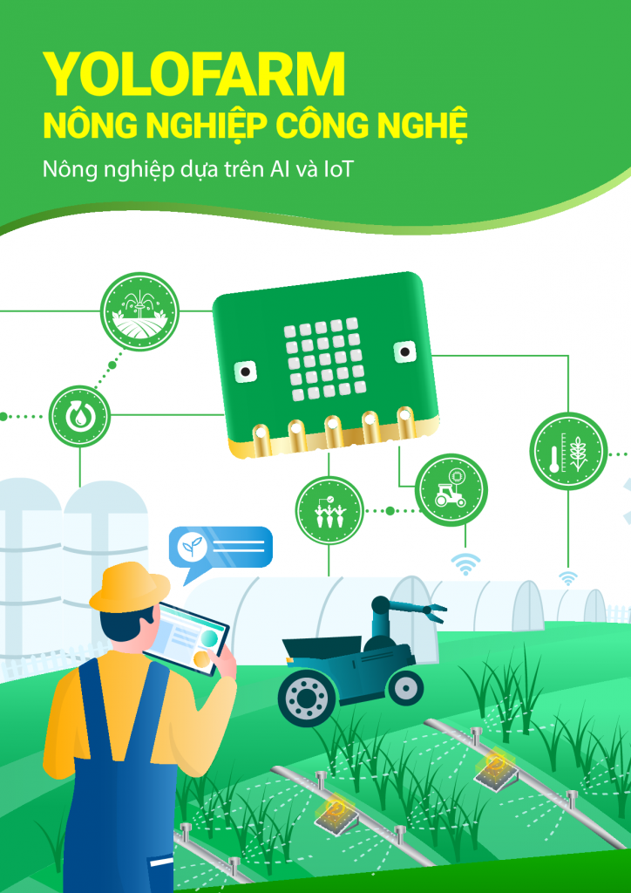
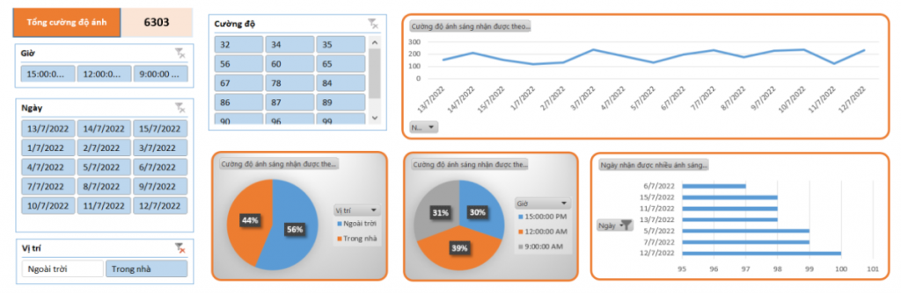

2. Giáo trình STEM nông nghiệp thông minh cùng Yolo:Bit
{kind=link}
Giới thiệu giáo trình STEM Nông nghiệp thông minh
Trong giáo trình này, chúng tôi giới thiệu đến bạn mô hình Smart Farm - Nông nghiệp thông minh, không chỉ sử dụng cảm biến đa dạng mà còn được tích hợp nhiều nền tảng công nghệ như Trí tuệ nhân tạo (AI), Kết nối vạn vật (IoT). Đây là một chủ đề đang được quan tâm trong giáo dục STEM.
Bên cạnh đó, chúng tôi sẽ giới thiệu những khái niệm cơ bản nhất về khoa học dữ liệu. Cụ thể là, các giá trị mà cảm biến thu thập được sẽ được trích xuất và phân tích bằng phần mềm Microsoft Excel, một công cụ vốn đã quen thuộc với đa số bạn đọc.
{kind=link}
Dự án trong giáo trình, tuy không phải là một sản phẩm thực tế, nhưng chúng tôi hy vọng nó sẽ cung cấp cung cấp cho bạn đọc các kiến thức cơ bản về việc áp dụng công nghệ vào một ứng dụng cụ thể.
Cấu trúc giáo trình
Giáo trình được thiết kế dành cho cả những ai chưa có kiến thức nhiều về lập trình, và được chia thành 5 phần riêng biệt từ dễ đến khó:
Phần 1: Các Thao Tác Cơ Bản Trên Yolo:Bit
Phần 2: Kết Nối Mở Rộng Cho Yolo:Bit
Phần 3: Kết Nối Vạn Vật với OhStem
Phần 4: Trí Tuệ Nhân Tạo
Phần 5: Hiện Thực Dự Án Yolo:Farm